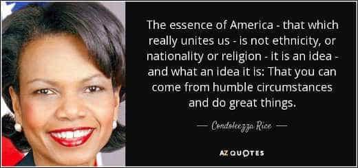
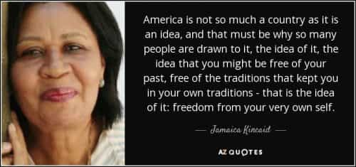

Jared is a middle-aged guy full of old-man wisdom. He's best described as a gentlemen scholar and a man among men. You can read his writing at his site: Legends of Men


When we hear about the rise in cultural degeneracy, it is typically associated with cultural Marxism, feminism, multiculturalism, and the umbrella term leftism. How did all of those gain traction in the nation of freedom, the nation founded by patriots who bled and died for independence? The machinations of the wealthy elites certainly put things in motion, and their greatest tool was a single piece of propaganda that has become so ingrained in American thought that both Republicans and Democrats repeat it.
The meta-propaganda that enables all other devious influences is the belief that America is built on an idea rather than the American people.
Here is a quote from Bloomberg about Senator Lindsay Graham:
“America is an idea, not a race,” the South Carolina Republican said, adding that diversity is a strength and not a weakness. The senator reiterated these sentiments in a statement released as the controversy over the president’s words grew. “I’ve always believed that America is an idea, not defined by its people but by its ideals.”
Michael Koplow writing for International Policy Digest writes in his article titled “America Is An Idea” that:
America is not just a place. America is an idea…The power of the United States comes from many sources, but more than anything else it comes from the strength of the American idea.
In his 1993 inaugural address Bill Clinton says:
“Today we do more than celebrate America. We rededicate ourselves to the very idea of America, an idea born in revolution and renewed through two centuries of challenge; an idea tempered by the knowledge that, but for fate, we, the fortunate, and the unfortunate might have been each other…”
In his 2016 film “Hilary’s America,” Dinesh D’Souza teaches an incoming group of immigrants that America is an idea. He can’t go to Mexico and become a Mexican any more than a Mexican can go to India and become an Indian. Anyone, however, can be an American because America is an idea.
As you can see, this belief spans the left-right political spectrum. Some like Dinesh D’Souza have probably just been brainwashed since birth that America is an idea. Others like Bono and Michael Koplow are probably just useful idiots. Politicians like Bill Clinton and Lindsay Graham are purposefully spreading the idea like a virus.
The idea of America can be anything, and that’s precisely what makes this the meta-propaganda. If huge corporations want waves of third-world immigrants to provide them with cheap labor the idea of America becomes “diversity is our strength” or “America is a melting pot” or “America is a nation of immigrants.”
If the rich want to get richer they spread the nugget that America is the idea that a person can be anything they want to be. So Americans believe that the rich are rich because they earned all that wealth. Yet when they clearly do a bad job they’re not held accountable for crimes or even allowed to go bankrupt.
Just look at the big bank bailouts of 2009. The idea of American social mobility was very inconvenient then, so social engineers stopped pushing it for a while. The wealthy elite loves the social mobility fallacy as a means to lower taxes for themselves. After all, if people believe that they can be one of the wealthy elites they won’t want to pay more taxes at that time, so they vote for tax cuts for wealthy elites now. Yet the chances of the average man becoming rich do not portray America as a land of social mobility.

When social engineers want to inspire racial hatred they say America was built on racism. Yet when they want to bolster feminism they say that America was built on equality and proceed to spew some lie about women making less money for doing the same job as men.
The “idea” of America can be anything. It is used to push an agenda that benefits very few at the cost of many.
When the founding fathers and settlers of this nation fought the revolutionary war and won their independence, they didn’t do it for an idea. They risked their lives (many gave their lives) for the people that surrounded them. They fought for the people of their new nation and the American way of life. They had no one but each other then. Even if the settlers of Scottish heritage were hostile to the settlers of German heritage (or any such rivalry), they came together against common enemies that threatened the American people.
People get the idea that America is not a nation of people because of the diversity of settlers. Hungarians are Hungarians because they were born in Hungary and so were their ancestors. America is such a young country that for a long time it didn’t sound right to say somebody was an American because their ancestors were not born in America. If their grandparents were immigrants, where does that put their long-term heritage?
Now America is over 240 years old. We have many high points in our history and also some low points. That puts America on par with every nation-state in Europe. America has been around long enough for us to say that America is a people and has been for a very long time.

When we accept that America is a people it becomes much harder for Americans to be callous to other Americans. Maybe those people on welfare will do everything they can to get off of it if they believe they are taking resources from their own people. Maybe criminal bankers would be imprisoned for their crimes if we suspected them of doing damage to our fellow Americans. Maybe we would have more compassion for people than dogs if we believed that those people were our people, Americans like us.
Those are dangerous beliefs to social engineering puppet-masters. The only way Americans can unite is if they cast aside the belief that America is an idea and accept that America is a nation of Americans. As we have proven in the past, when Americans unite and care for each other there is no enemy we can’t defeat.
For more from Jared Trueheart on the roles of men and women in literature and film check out his writing at Legends of Men.
Read More: What Kind Of Belief System Is Behind The European Migrants?